Overview
During my time as an exchange student at Carnegie Mellon University, I wrote and designed a kiltie band uniform instructional handbook with my three group members.
This handbook is an illustrated document that teaches students to wear CMU's traditional kiltie band uniform.
This handbook has won the Siegal Award for Professional Writing at Carnegie Mellon University.
Problem Statement
How to teach students to wear kiltie band uniform?
"The kiltie band uniform is surprisingly complicated."As my group member, Salmon, said, she spent a long time learning to wear the uniform during her time at the CMU kiltie band.
For students new to kiltie band, it is difficult to identify over 10 parts of the uniform. Also, since each parts are connected with one another, it needs additional efforts to put on the uniform.
Conveying instructions on paper examines our writing's effectiveness and clarity.
Our chanllege is to use the power of words to explain complicated steps of putting on the kiltie band uniform.
Understand the Kiltie Band Uniform
Before the writing process, we need to understand how to wear kilie band uniform ourselves.
Dissect the Uniform's Parts
Laying out all parts of the uniform helps us understand the kiltie band unifrom
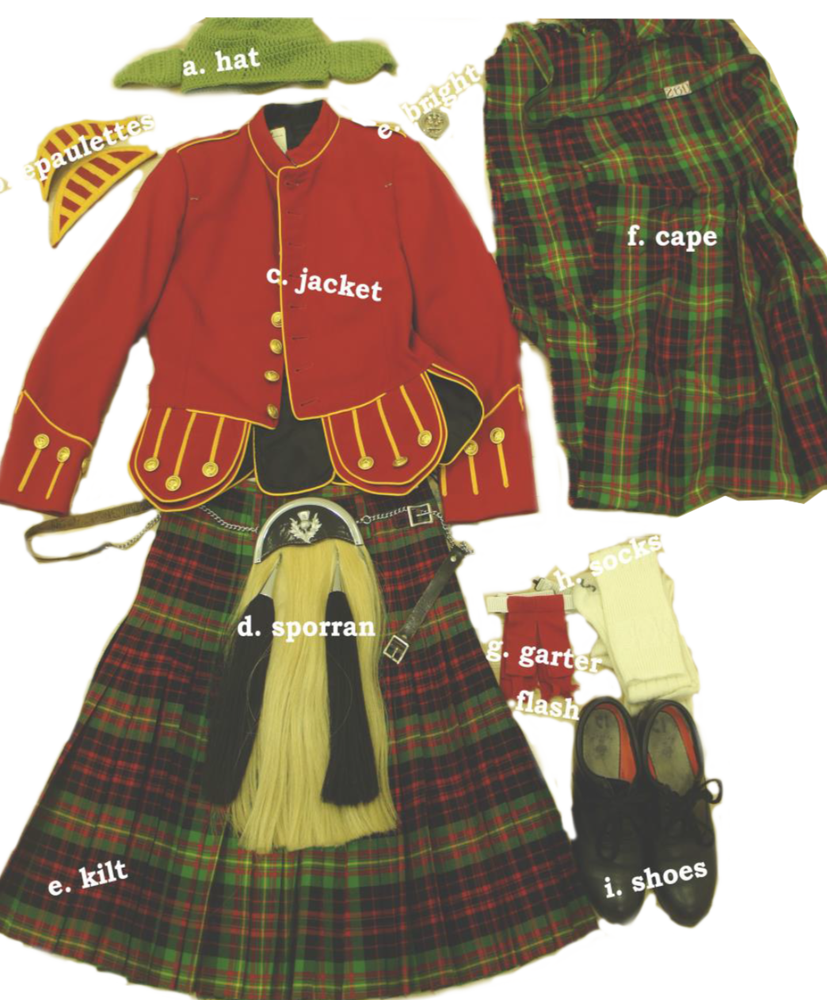- The kiltie band uniform consists of 1o parts.
- Parts are categorized to groups by orders.
Invite an Expert
"There are four steps to put on the sporran."
We invite a band member to show us how she put on the uniform. While she presenting, we take notes and photos to document each step.
Write for the Audience
With the audience in mind, my group focus on what they want to know and what difficulties they will encounter.
Use Plain Words
Most readears are new members of kiltie band. They are not familiar with the terms and process of wearing the uniform. Therefore, it is crucial to use simple and concise text to instuct them.
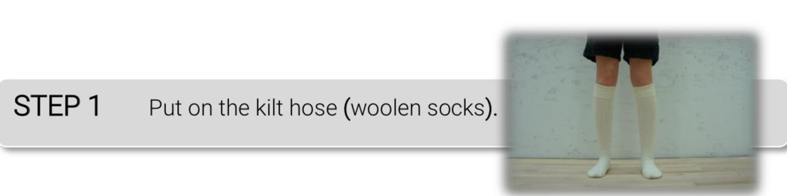 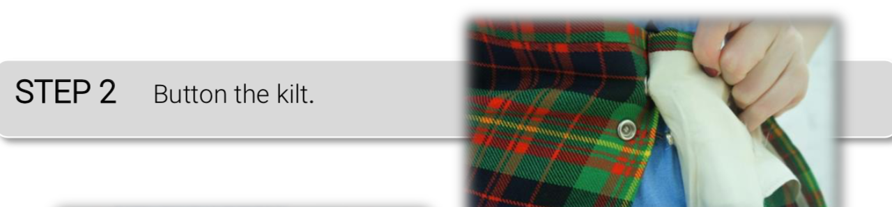 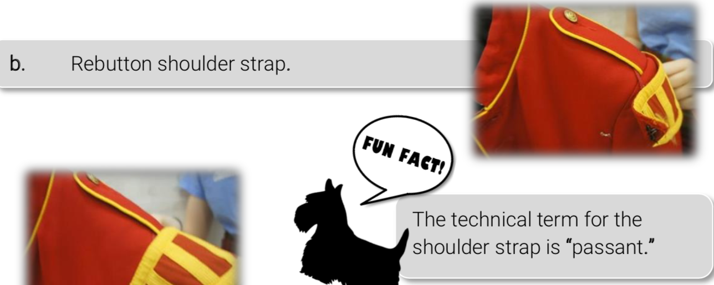
- Use simple verbs to guide the audience.
- Avoid using technical terms.
Think about Audience's Potential Problems
We address the problems that audience will potentially encounter while learning to wear the uniform.
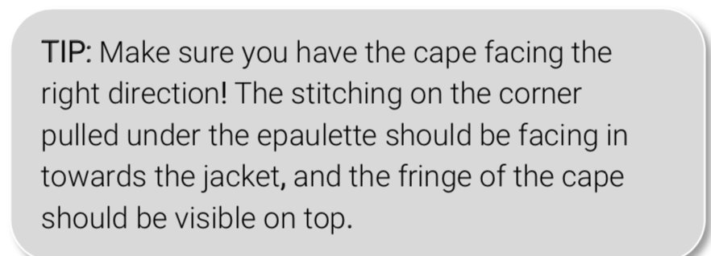 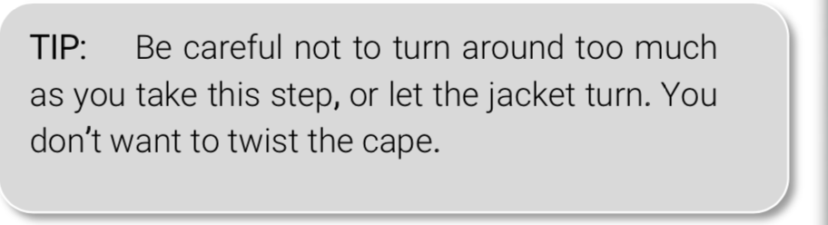 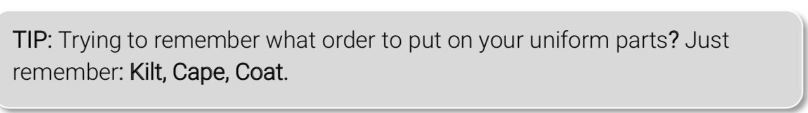Design in a Friendly Voice
We remind readeas of CMU tradition and history as the kiltie band is a beloved treasure on campus.
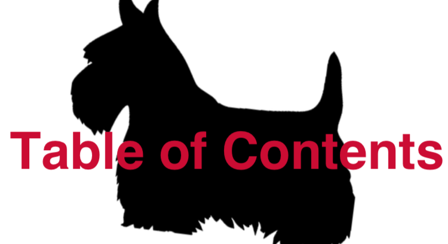Refering to the CMU official design guidelines, we choose the taran graphic, the mascot Scotty and the color palette with a twist of our own type choice.
Test the Handbook
We ask people without previous kiltie uniforms to put it on following our instructions. We make revision according to their problems and difficulties during this process.
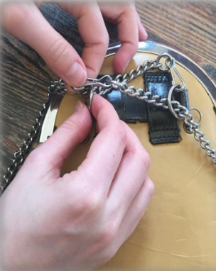 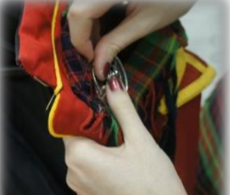 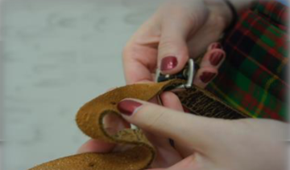Full Hand Book Here
Takeaway
- Try it yourself first.
While writing for instructions, we try to put on the uniform to test if our instruction works. This is particularly useful if you can borrow an eye from the non-expert. - Focus on the Use of Verbs.
Verbs guide the audience to follow the instructions. Putting verbs first helps readers to understand each step. - Keep Your Audience in Mind.
Expecting readers' problems and reaction will help us write with a goal and focus. Address these difficulties in the writing will create a better experience for the audience.